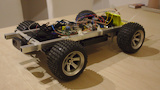
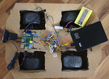
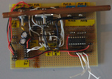
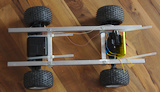
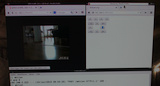
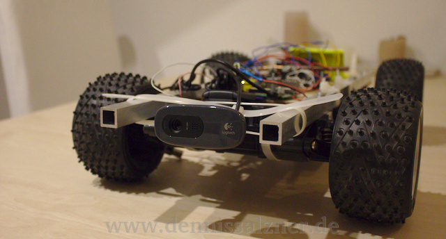
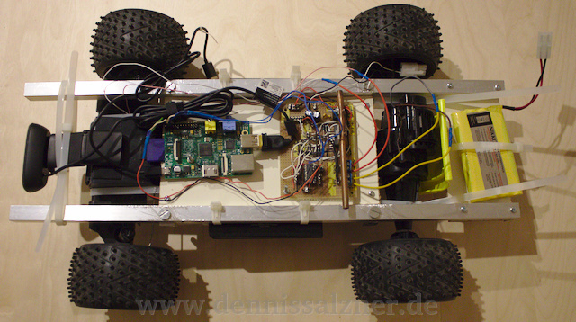

|

Fig.1: completed car Fig.2: old chassis Fig.3: motor controller Fig.4: new aluminum chassis Fig.5: computer control Fig.6: front camera Fig.7: components |
A WiFi controlled car with cameraWhat? I've finally gotten around to completing my WiFi controlled car. This project has been lying around for ages. I recently bought a hand-held circular saw and with it I can cut aluminum rods. That got me the motivation to finish the cars chassis. The car connects to the local area network via WiFi. It runs two web servers, one for controlling the motors and one for viewing the web cam. After turning it on all I need to do is open the two webpages in my browser and I can control the car and see where it's going. When? Computer controlled cars with cameras have fascinated me for a long time. But I didn't have the knowledge to build one myself, when I was younger. My first humble attempts were to strap a Super Nintendo, with a GameBoy Cartridge Adapter and a GameBoy Camera to a remote controlled car. This did work, but the load was way too heavy for the car and there were cables dangling off the back. With the advent of network routers like the Asus WL-500g, that could be modified to run linux and had a USB Port, I knew where I wanted to go. The USB port could be used for a web cam, as IP and Wifi cameras are still very expensive. Now we have miniature embedded Linux computers such as the RaspberryPi or BeagleboneBlack, which a perfect for the purpose. What was troubling me then was building the chassis, battery powering the car, the software and the electronics. I got into Linux and electronics since the days my first attempts, but now I wanted flexibility in adding sensors to the car. Completing the car didn't have a high priority anymore, as other projects interested me more. I didn't want to work on the car until I had enough knowledge to quickly complete it. Discovering the I2C bus system was the final tool I needed for quickly completing the car. With it I can attach and detach boards by connecting only two wires. I don't need to plan which pins I use for what or use complicated plugs. Now I can make small boards for each purpose and connect them with I2C. Once a board is finished, it is finished and needs no further modification. With the electronics in hand I needed a chassis. I didn't like the idea of cutting it from wood as sturdy wood is heavy. It is also very difficult to quickly add components. I needed some sort of compartmentalization. I got rectangular aluminum tubes for my CNC mill project, but both the car and the CNC mill were lying around, because I couldn't easily cut it. Now I have the saw and the first thing I did was finish the car. With the aluminum tubes I can quickly add and remove components by screwing them into the aluminum. And aluminum rods are sturdy, cheap and light-weight. Why? A remote controlled car is something that almost every kid is fascinated by. Now this fascination has changed only slightly. After getting into machine learning and robot navigation through my university studies I've become interested in the idea of having an autonomous robot driving around in the apartment. In order to autonomously drive, the car needs to navigate in a map of the apartment. It therefore needs to know where it is. Indoor navigation is very difficult and requires lots of sensors. This is why I wanted a versatile robot car platform to quickly try things out. One of my previous projects was reading out a compass via I2C (see here) and this is one step in the direction of adding sensors. Background? There are many different types of remote controlled cars. The most basic have a 433 MHz remote control. They drive around, but they can't transmit any video. Transmitting video is actually really difficult, as it needs sophisticated hardware. Sometimes wireless cameras are added to remote controlled airplanes, but they are very expensive. When people started replacing the firmware running on home network routers, one of the first uses was connecting web cams and using them as IP cameras. Then adding motor control and adding motors and wheels from torn apart remote control cars. Robot vacuum cleaners, such as the Roomba were no good for vacuuming at first, but they had interfaces for manually controlling the motors from the very start. This combination has lead to quite a few WiFi enabled robot projects on the internet. How? My car isn't much different from the hundreds of Wifi cars on the internet, but mine uses I2C for controlling all of it's sensors and actuators - that includes the motors for driving and steering. And it uses an embedded computer for control with a web cam and wireless LAN USB dongle. In order to really simplify the software I've used Python Flask as in many of my previous projects (see here). The software consists of less than 50 lines of code and allows control over a web browser. That means it can also be controlled from smartphones. I won't go into too much detail on how it works, as it is quite basic. The necessary information for building such a car can be quickly found on the internet.
Progress? The car works well, but some issues remain. The camera stream from the web cam is unbearably slow. The RaspberryPi should have enough processing power to handle a web cam stream, so I don't really know what the issue is. Motor control works almost instantly. The batteries of the remote controlled car are very weak, perhaps I will replace them. It might be possible to run the motors off of the USB power pack. This would give me flexibility in adding a more powerful USB power pack. They also come with charging cables, are safe to use and have displays showing how much power is left. Some ideas for components I could add:
But who knows when I'll get around to adding any of that. |